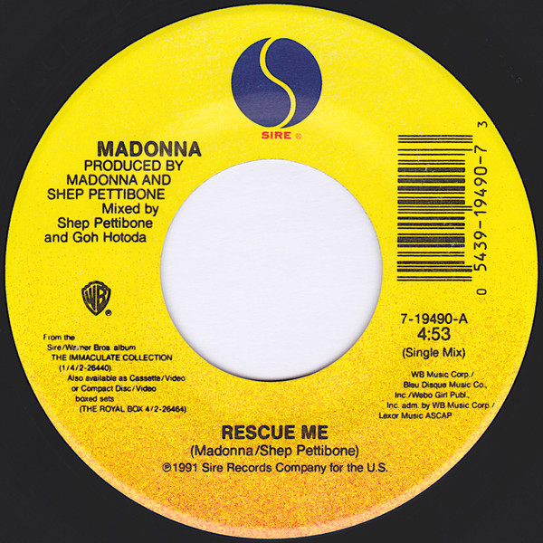

«Rescue Me» es una canción interpretada por la cantante estadounidense
Madonna, incluida en su primer álbum de grandes éxitos, The Immaculate
Collection (1990). Compuesta y producida por Madonna y Shep Pettibone,
con quien trabajó en su anterior sencillo «Vogue», fue una de las dos
pistas nuevas creadas para el material, junto con «Justify My Love».
Es una canción de tempo rápido perteneciente a los géneros dance pop y
góspel-house; emplea la técnica de la palabra hablada y Madonna canta
con una voz gutural hacia el final. La letra es una declaración sobre
el poder del amor y recurre a la metáfora del ahogamiento. Además,
referencia a «Stop Her on Sight (S.O.S.)» (1966) de Edwin Starr y
«Respect» (1967) de Aretha Franklin.
